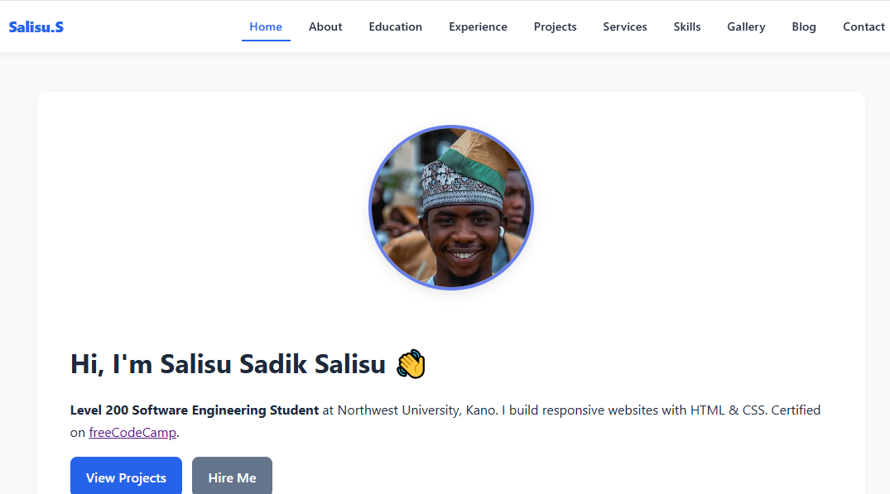

Gallery
Screenshots and pictures from my journey.
Graduation
NWU Kano

Me - Salisu Sadik
Level 200 Software Engineering

Portfolio Site
10-Page HTML/CSS Site
Screenshots and pictures from my journey.
NWU Kano
Level 200 Software Engineering

10-Page HTML/CSS Site